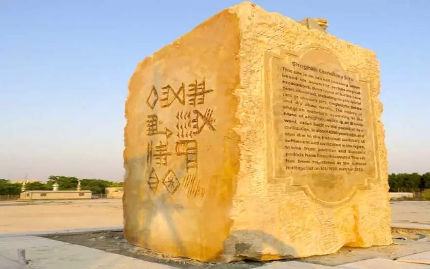

یکی از دیدنیهای تاریخی و مهم بوشهر، گورستان شغاب است که قدمتی ۴۲۰۰ ساله دارد. این گورستان شامل خمرههایی بزرگ و کوچک میشود که در دل خاک آرام گرفتهاند و محل دفن اموات در دوران ایلامیان است. محوطه گورستان شغاب با پشتههای کمارتفاعی که به سمت لب دریا کشیده شدهاند، زیبایی طبیعت و تاریخ را در هم آمیخته است. این پشتهها، هرچه به روستای شغاب نزدیکتر میشوید، بیشتر قابل رویت هستند و ارتفاع کم آنها باعث شده تا گورستان به شکلی مسطح به نظر برسد. آدرس: بوشهر، خیابان میثم تمار، جاده ساحلی
